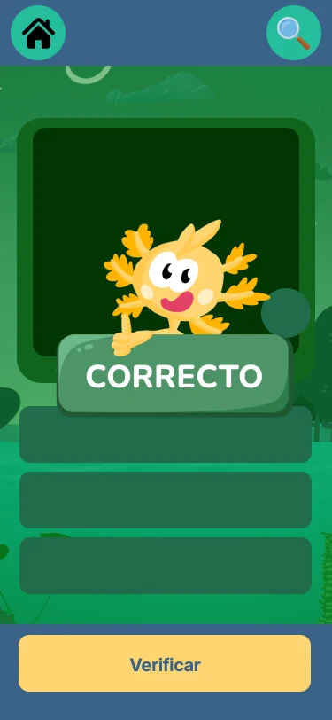
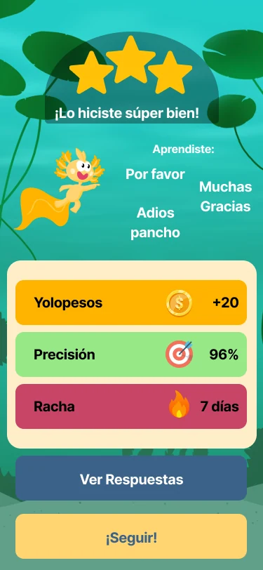
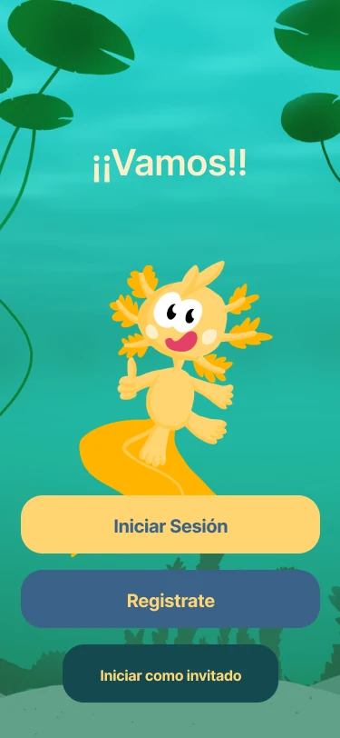

Trabajo actual
2026
Yoolmi
Ahora mismo trabajo UX/UI para una app infantil de Lengua de Señas Mexicana. Sigue cambiando, así que muestro interfaces seleccionadas en vez de fingir que ya es un caso de estudio terminado.